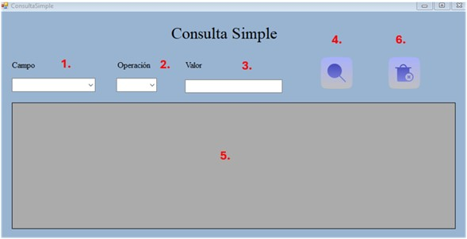

Vault Tech
Manual de Usuario
Componente de Consultas Inteligentes Simple

- 1. En el área de Campo se selecciona el campo de la tabla consulta que se quiere ver.
- 2. En el área de Operación se selecciona la operación que se desea consultar, como operaciones lógicas de mayor, menor, igual, parecido y no parecido.
- 3. En el área de Valor se coloca el valor que se busca consultar, el valor que se va a comparar con el operador.
- 4. El Botón De Consulta procesa los datos ingresados y ejecuta la consulta.
- 5. En el Data Grid View se mostrará el resultado de la ejecución de la consulta.
- 6. El Botón De Eliminar limpia todos los elementos, dejándolos con los valores predeterminados para poder hacer una nueva consulta en limpio.